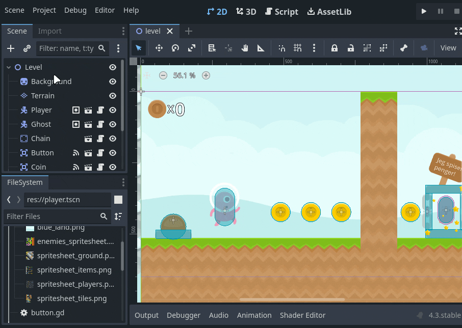
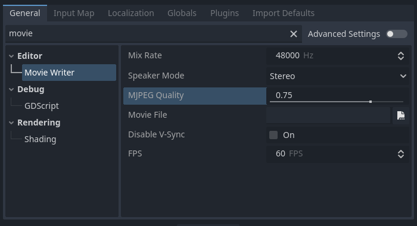
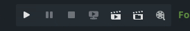
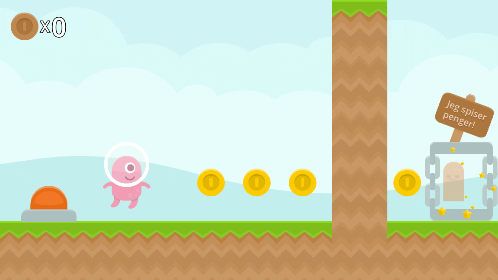
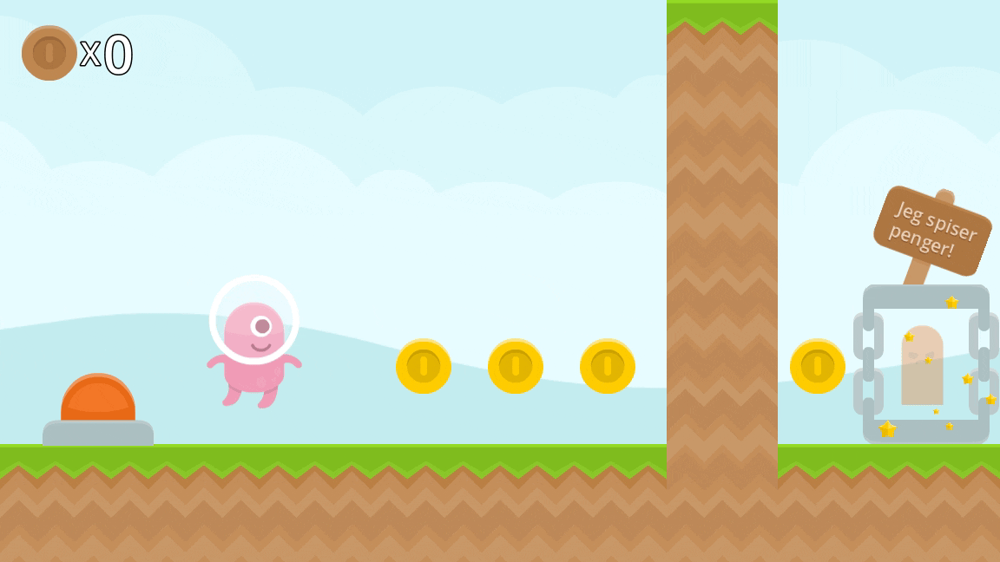

B - Spillopptak
Godot har en innebygd funksjon for å ta opp video. Dette er praktisk når du for eksempel trenger innhold til en trailer for spillet ditt.
Oppsett
Først må du sette opp hvor videofilen skal ligge og hva den skal hete.
Gå til Project > Project Settings > Movie Writer og velg ønsket mappe og navn i Movie File feltet. Obs: Velg en mappe utenfor spillprosjektet.

På denne skjermen stiller du også inn kvaliteten på videoen.

Opptak
Så er det bare å slå på Movie Maker mode før du starter spillet, så taes det automatisk opp.

Du vil nok merke at spillet kjører tregere og mer hakkete enn vanlig. Dette er fordi godot passer på at hver frame blir ferdig rendret før den går videre til neste, når du spiller spill vanlig så kan frames hoppes over for å holde hastigheten oppe. Dette vil si at du kan ta opp en spill video i en mye høyere kvalitet enn det maskinen din klarer å kjøre vanligvis, det tar bare litt lenger tid.

Her tok jeg opp en video med 165fps, det ser kjempe tregt ut, men på den eksporterte videoen går det i rett hastighet.

Obs: Når du har en video du er fornøyd med, enten flytt den eller gi den nytt navn, for om du tar opp på nytt så vil den overskrives.
Fordeler og ulemper
Fordelen er som sagt at du kan spille inn en video med høy kvalitet og framerate på relativt svakt hardware. Ulempen er at det kan være vanskeligere å spille spillet for å få naturlig “gameplay” å ta opp.